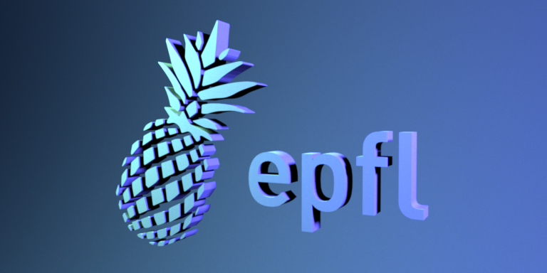
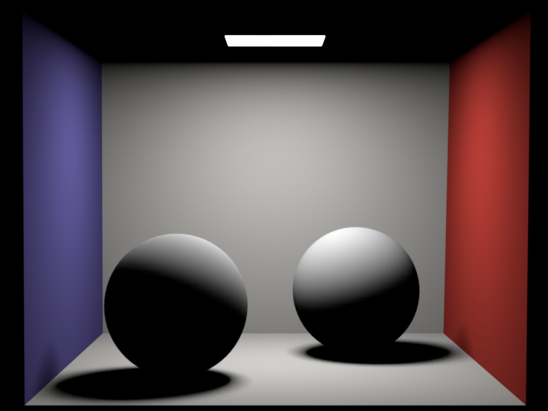
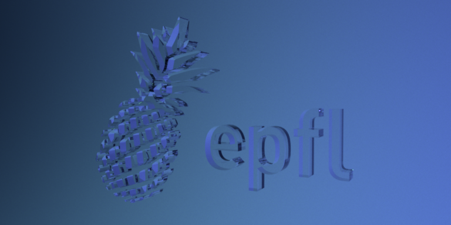
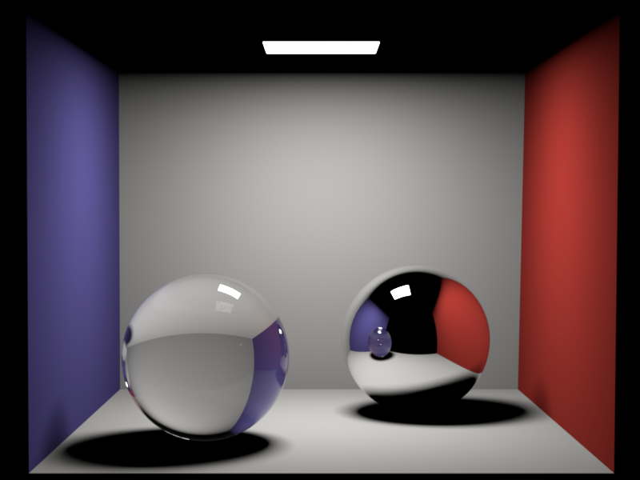
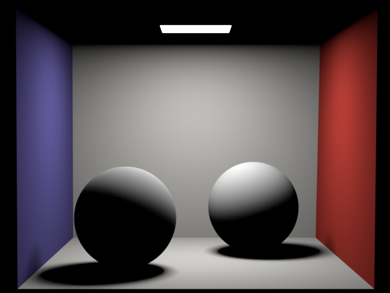
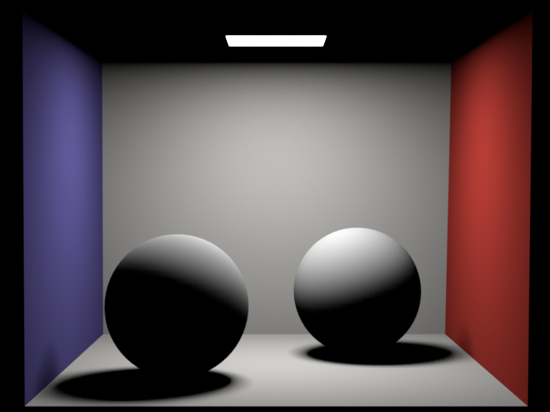
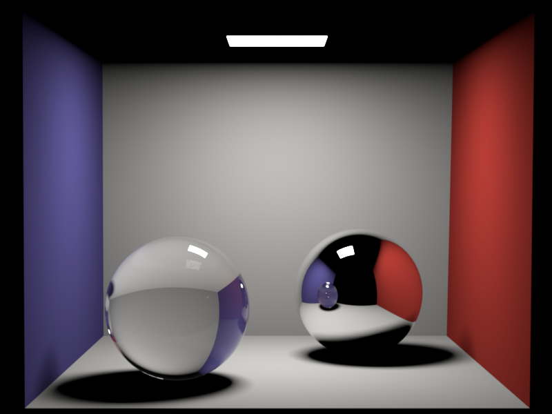
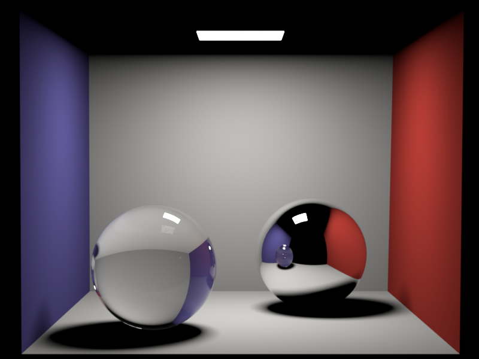

**Homework 4**
Student name: Qiyuan Liang
Sciper number: 323093
Area lights (25 pts)
====================
1. **Point Sampling**
To sample points uniformly on a surface, I perform the following steps:
1. Inside the `Mesh::activate()` function, the DiscretePDF object of the specific Mesh is built. The PDF is based on the surface area of each triangle. The DiscretePDF gets normalized as the final step.
2. With the built DiscretePDF, we can now perform a uniform random sampling easily:
1. Use the DiscretePDF to choose a triangle with probability proportional to its surface area. Calling with `sampleReuse` allows the reuse of random values in a later stage.
2. Given the selected triangle, sampling a barycentric coordinate can be easily done.
3. With the sampled barycentric coordinate, if the per-vertex normal is available, we are able to compute the interpolated surface normal, which is a weighted average of the three vertex normals. Otherwise, the face normal is used.
4. The PDF of the given sample is computed as the reciprocal of the surface area of the entire mesh.
5. The data structure that contains all the information is returned to the caller.
```cpp
struct AreaSample {
/// Position on the surface of the mesh
Point3f p;
/// Interpolated surface normal, or face normal
Normal3f n;
/// Probability density of the sample
float pdf;
};
```
2. **Emitter & AreaLight**
The emitter itself only contains a radiance field. All the sampling is done in its parent Mesh. Therefore, the `sample` function in the Emitter is just a wrapper around its parent mesh. `pdf` function returns the pdf value directly. The only emitter function here is `eval` to return the evaluated radiance value. To compute the radiance value, it is helpful to check whether the light can actually go out. The ray that goes into the object (with a cosine value less than 0) is invalid. As a result, I have the `EmitterQueryRecord` containing the outgoing direction of the light and the surface normal. If the theta between these two vectors is larger than 90 degrees, the radiance value evaluates to 0, otherwise, evaluates to the radiance of the light. Following is the data structure defined for `EmitterQueryRecord`.
```cpp
struct EmitterQueryRecord {
/// Outgoing direction (in the world frame)
Vector3f wo;
/// Position on the emitter
Point3f p;
/// Surface normal of the emitter
Normal3f n;
/// PDF of the sampling
float pdf;
/// Parent mesh of the emitter
Mesh* mesh;
/// Empty init
EmitterQueryRecord() {}
/// Create a new record for sampling the Emitter
EmitterQueryRecord(Mesh* mesh)
: mesh(mesh){}
/// Create a new record for eval the Emitter
EmitterQueryRecord(Vector3f wo, Normal3f n)
: wo(wo), n(n){}
};
```
Distribution Ray Tracing (40 pts)
=================================
**General design**
1. Similar to the simple integrator, we first check whether the ray originated from the camera hits a surface in the scene. If it does not hit the surface at all, we can safely return 0.0f as a result. Otherwise, go to step 2.
2. There is an intersection point between the camera and scene now. Next, we first perform the check, whether the intersection points are on an emitter or not. If the intersection point is on an emitter, we need to include a $L_e$ term in the final return light. Otherwise, it is a normal one, and there is no emitting light from it.
3. For both cases in step 2, we again need to uniformly sample a point on an emitter and compute the radiance. Because there are cases where there are multiple light sources, we first need to choose the emitter uniformly, with a $PDF_{emitter} = \dfrac{1}{sizeof(emitter)}$.
4. After the emitter is selected, we can perform a uniform sampling on its mesh. We obtain the sampling position $p$, point normal $n$, and $PDF_{areaSample}$ here.
5. With the sampled point on the mesh, get the three components separately ($L_e$ of the emitter, $f_r$ of the intersection point, and $G$ to correct the distortion given the change of integration variable).
6. The final light is given as the $L_e + \dfrac{f_r(x, x \rightarrow y, \omega_r)G(x \leftrightarrow y)L_e(y, y \rightarrow x)}{PDF_{emitter}PDF_{areaSample}}$
Diffuse logo:

Cornell box (distributed):

Dielectrics (25 pts)
====================
**General design**
Different from diffuse materials, dielectrics are able to both reflect and refract light. This means when we are calling `sample()` on dielectrics, there are two possibilities, and it is non-deterministic. Detailed procedures to sample dielectrics are as follows:
1. Compute the fresnel value given the interior IOR and exterior IOR. Whether it is interior or exterior is decided by the $\cos(\theta)$ of the incident light.
2. After computing the fresnel value, the portion of reflection and refraction light is determined. We can then sample a random 1D value to decide whether the current ray goes into the reflection or refraction branch.
3. If it goes into the reflection branch, it is nothing more than a mirror case.
4. If it goes into the refraction branch, we need to compute the new refraction angle given the interior IOR and exterior IOR. Here we do not need to consider the case of total reflection, because the fresnel value will be 1 in such a case. Therefore, there will be no samples going into the refraction branch. The refraction color given by the dielectrics is computed as the $\dfrac{\eta_1^2}{\eta_2^2}$, because, although the refraction does not change the true color of the light, it does change its density.
Whitted-style ray tracing (10 pts)
==================================
**General design**
The logic of whitted.cpp does not change much. In the case of the intersection points lying on a diffuse surface, it falls back to the previous implementation. In the case of a specular or dielectric surface, we perform recursion to light tracing. Detailed procedures are as follows:
1. Sample a light from the intersection's surface. After the sampling, we obtain the reflected or refracted light direction and the corresponding color coefficient.
2. Next we perform a random decision as to whether continue the tracing or stop. This step avoids infinite recursion of light tracing.
3. In the case of continuing tracing, the light value is computed as the product of the color coefficient and the light computed from the recursion.
Dielectric logo:

Cornell box (Whitted):

Artist Points: Interesting scene (5 points)
===========================================
3D model used: https://blendswap.com/blend/1634
Final rendered image using whitted integrator:

 

 
